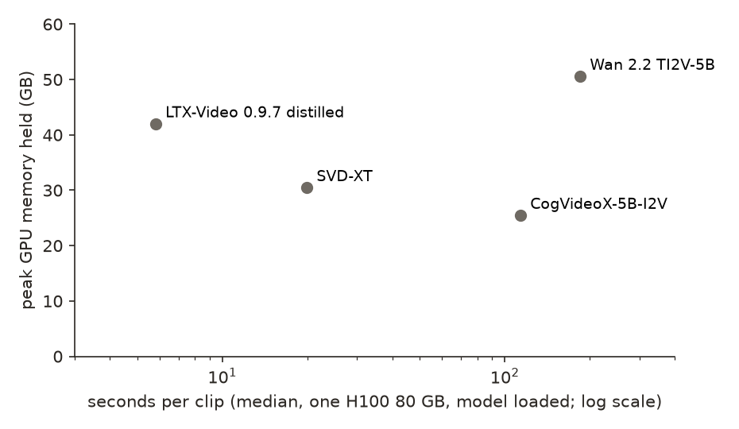

← Research·Experiments·
Judging image-to-video models: no cheap score matches one more voter, and VBench’s consistency scores prefer a frozen photo
An image-to-video model turns one photo into a few seconds of moving footage. Checking it by eye is slow, so leaderboards lean on automatic scores and AI judges. This note checks them against 1,200 pairs of clips from benchmark.ai’s public votes, against broken copies of real clips, and runs four open models on one GPU.
Summary: the short answer and the key results
In short
Do cheap scores for image-to-video clips agree with people as often as one more voter does?
Not on realism. On 800 pairs of clips that dozens of people compared, one more voter sides with the rest 66% of the time on “which looks shot by a real camera?” and 68% on “which has fewer glitches?”. The best stand-in, a gemini-3.6-flash judge shown 8 frames per clip, reaches 62% and 60%; CLIP similarity sits at chance (51%), and three of VBench++’s consistency and smoothness scores land below chance, because they reward clips that barely move. Made to choose between a real generation and a frozen copy of its input photo, those scores, subject consistency, the I2V scores, CLIP and DINOv2 pick the frozen photo every time (25 of 25); the two judges pick it 14% of the time. Camera moves are the exception: a graded version of VBench++’s CoTracker check agrees with voters 73% of the time, level with one more voter (71%). On one H100, the four open models take 6 to 185 seconds per clip and hold 25 to 51 GB.
Key results
| What we tested | Result | Compared with |
|---|---|---|
| Does a cheap scorer pick the clip most voters picked? (800 realism pairs, two questions) | Less often than one more voter. Photorealism: gemini-3.6-flash judge 0.618 [0.592, 0.645], optical-flow size 0.608, gpt-5.4-mini judge 0.581, CLIP 0.509. Fewer glitches: gemini 0.601 [0.572, 0.628], CLIP 0.511 | One voter against the others: 0.660 [0.652, 0.669] and 0.679 [0.669, 0.689]. Paired, gemini is 4.3 points [1.7, 6.8] and 7.8 points [5.1, 10.6] below |
| Does any scorer beat CLIP, pair by pair? | Both judges and the image-quality scores do; gemini by +10.8 points [+6.5, +15.3] on photorealism and +9.0 [+4.9, +12.8] on glitches | Background consistency, motion smoothness and temporal flickering do worse than CLIP (−6.9 to −11.1 points on photorealism) |
| Do scorers prefer a broken copy to the real clip? (25 clips) | VBench’s consistency, smoothness and I2V scores, CLIP and DINOv2 prefer a frozen copy of the input photo 25 times of 25. Motion smoothness and temporal flickering also prefer a heavily blurred copy (0.92 and 1.00) | gpt-5.4-mini and gemini-3.6-flash prefer the frozen photo in 14%, the blurred copy in 0% |
| Real camera footage against a generated clip (96 pairs) | The voters’ majority picks the real footage 80% [72, 89] of the time on photorealism. gemini-3.6-flash picks it 56%, gpt-5.4-mini 44% | CLIP 66%; VBench’s I2V background score 72% |
| Did the clip make the asked camera move? (400 pairs) | A graded CoTracker shift agrees 0.734 [0.696, 0.770], level with one voter (paired +2.7 points [−1.0, +6.5]) | VBench++’s yes/no camera heuristic 0.593; gemini judge 0.667 (200 pairs); CLIP 0.420, below chance |
| Do the scorers rank the 17 models and the real footage as all the votes do? | Imaging quality (MUSIQ): Spearman 0.75 and 0.79; gemini judge 0.59 and 0.69; CLIP 0.32 and 0.47 | The sampled votes alone: 0.95 and 0.96. Temporal flickering: −0.31 |
| Four open models on one H100 80 GB | LTX-Video 0.9.7 distilled 5.8 s per clip, 42 GB; SVD-XT 19.9 s, 30 GB; CogVideoX-5B-I2V 114 s, 25 GB; Wan 2.2 TI2V-5B 185 s, 51 GB | Wan and CogVideoX ran on 25 stills, LTX and SVD on 40, to stay inside the budget |
01Introduction
Take a five-second clip a model made from a photo of flags in the wind, and next to it a “clip” that is just the photo shown for five seconds. Ask VBench++, the most used benchmark for these models, which is more consistent, smoother and less flickery: it says the frozen photo, on all 25 clips we tried. That is not a bug in the code. A video that never changes is perfectly consistent with itself. It is a warning about what the scores measure, and the question this note asks is the practical one: when a lab reports such a score, or an AI judge’s verdict, how often does it agree with the people who watched the clips?
What is known. Image-to-video models (Wan, LTX-Video, CogVideoX, Stable Video Diffusion, and closed ones such as Veo and Kling) take a still and a short instruction and return a few seconds of video. VBench++ scores them on many “dimensions”, each a small model: DINO features for subject consistency, a frame-interpolation model for smoothness, optical flow for how much moves, a CoTracker point tracker for camera motion, and others. Its authors validate each dimension against human preference on their own pairs, and include a “dynamic degree” score because consistency rewards stillness. Vision-language models are also used as judges. And public arenas now publish their votes: Rapidata released the votes behind benchmark.ai’s image-to-video leaderboards, every vote and every clip, under CC BY 4.0.
What is missing. A check of these scores against someone else’s votes, pair by pair, with the voters’ own disagreement as the yardstick; and a check of each score on clips with a known answer. The sibling note on image-to-3D models found that cheap scores agree with voters about as often as one more voter does. Video is a harder test: the thing being judged is motion over time, which a single frame cannot show.
Do cheap automatic scores and AI judges agree with the human majority on image-to-video clips as often as one more voter does, and which of them can be fooled by a clip that is obviously broken?
What this note does. Its contributions:
- A measurement: 12 VBench++ scores, CLIP, DINOv2 and two judges against 800 realism pairs (two questions) and 400 camera pairs, with one voter’s agreement with the rest as the ceiling.
- Known-answer checks: every scorer against four broken copies of 25 real generations (a frozen photo, the clip reversed, its frames shuffled, a heavy blur), and against real camera footage.
- A camera-move check: VBench++’s CoTracker heuristic, and a graded version of it, against the camera-movement votes.
- Four open models run on one GPU, with seconds and memory per clip, and a gallery of their clips beside the real footage.
What would count as an answer. Set before scoring:
- Each scorer is compared with one voter on the same pairs and the same target (the majority of the other voters).
- A scorer “beats” another only if the paired difference, pair by pair, has a 95% interval above zero. CLIP, the simplest score, is the baseline every scorer is compared with.
- Every scorer is also checked on broken copies of real clips, which it should never prefer.
- Every clip is decoded, resized and scored by the same code.
02Setup
2.1 Video 101, for software engineers
- A video is a list of images (frames) and a frame rate. The clips here are 5 to 6.6 seconds at 16 to 30 frames a second, so 80 to 180 frames. Everything below reads frames; sound is ignored.
- Image-to-video conditioning. The model is given the first frame (the still) and a sentence (“flags flying in the wind”) and must invent the rest. Good output keeps the still’s content, moves plausibly and has no “glitches”: melting hands, objects that pop in or out, flicker.
- Consistency scores compare frames with each other. Embed every frame with an image model (DINO for the subject, CLIP for the background) and average the cosine similarity of each frame to the first and to the previous one. A clip that changes little scores high, whether it changes little because it is good or because it barely moves.
- Smoothness and flicker look at neighbouring frames. Motion smoothness drops every other frame, asks a frame-interpolation network (AMT) to fill it back in, and scores how close the guess is. Temporal flickering is the mean pixel difference between consecutive frames, flipped so that higher is better.
- Optical flow measures how much moves. RAFT estimates, for every pixel, where it moved between two frames. VBench++’s dynamic degree turns the largest flows into a yes/no “does it move?”; here their mean size is kept too, as a graded score.
- Per-frame quality scores ignore time. Aesthetic quality (a LAION predictor on CLIP features) and imaging quality (MUSIQ, trained on human ratings of photo sharpness and noise) score each frame as a photo and average.
- Point tracking reads the camera. CoTracker follows a 10 by 10 grid of points through the clip. If the points all slide right, the camera panned left; if they spread out from the centre, it zoomed in.
2.2 “One more voter”, by hand, on five votes
Five people compare clips A and B: three choose A, two choose B. Remove each person in turn and ask whether they agree with the majority of the four left:
| Person removed | The other four | Majority | Removed person agrees? |
|---|---|---|---|
| One of the 3 A-voters | 2 A, 2 B | tie | ½ (each of 3) |
| One of the 2 B-voters | 3 A, 1 B | A | 0 (each of 2) |
| Average over the five | (3 × ½ + 2 × 0) / 5 = 0.30 |
A scorer that picked A is scored against the same five four-voter majorities: ½ three times and 1 twice, so 0.70. On a pair this split, any scorer that agrees with the overall majority beats a random voter. Averaged over many pairs, “one more voter” is the agreement an extra person would add; a scorer above it is a better stand-in for the crowd than one more member of it. The realism pairs have 20 to 257 voters each (median 60), so the majority is firm and the ceiling is close to the average voter’s accuracy; the camera pairs have 5 to 15 (median 5).
2.3 Two vote sets and one set of stills
| Set | What it is | Size | Used here |
|---|---|---|---|
| Rapidata image-to-video realism (dataset, CC BY 4.0) | Pairs of clips from the same still and prompt: 25 stills, 17 models plus the real footage the still came from. Two questions, asked without the prompt: “Which video looks more like it was shot by a real camera?” and “Which video has more glitches and is more likely to be AI generated?” | 2,981 pairs, 522,210 votes | All pairs for the ranking; 800 pairs (stratified by model pair, no exact ties), each used for both questions (human_pairs.csv) |
| Rapidata image-to-video camera movement (dataset, CC BY 4.0) | Pairs of clips asked to make the same camera move from the same still; voters watch a reference animation of the move and answer “Which video better matches the movement of the top video?” | 82,153 pairs, 22 stills | All one-move pairs for the ranking (20 models); 800 one-move pairs sampled (stratified by move), of which 400 were scored and 200 judged (section 3) |
| Our clips | The 25 realism stills with their own prompts, and 15 camera stills each with one single-move prompt from the camera set | 130 clips | Speed, memory and the gallery (section 4.7) |
Only one-move camera prompts whose move shows up as one of VBench++’s six image-motion classes are used: pan and slide left or right, tilt and rise or descend, zoom and dolly in or out (12 of the 14 single moves; rolls have no class). A slide and a pan both move the picture sideways, so both map to the same class.
2.4 The scorers
- VBench++ scores, computed by the
vbenchpackage’s own functions (version 0.1.5) on every frame: subject consistency, background consistency, motion smoothness, temporal flickering, dynamic degree (and its mean flow size), aesthetic quality, imaging quality, I2V subject (DINO, frames against the still) and I2V background (DreamSim). Higher is better for all, as VBench++ defines them. - CLIP and DINOv2 similarity, as in the 3D note: mean cosine between the still and 8 evenly spaced frames. CLIP is the baseline.
- Camera move: VBench++’s heuristic (CoTracker2 on a 10 × 10 grid; a clip “hits” when the asked class is among those it reads), and a graded version fixed before scoring: the mean shift of the tracked points from first to last frame in the direction the move should push the picture, as a share of the short side.
- Two judges: gpt-5.4-mini and gemini-3.6-flash, at low reasoning effort. Each clip is shown as one image of 8 frames spread over the clip, in order. The judge gets what the voters got, as far as frames allow: the two clips and the voters’ own question for realism; the reference animation, made into the same kind of sheet, plus the two clips for camera. One question per call, and each pair is asked twice with the clips swapped; a clip wins only if both orders pick it, otherwise it is a tie.
Every clip is first re-encoded at 480 pixels on its short side, with its frame rate, length and frames unchanged, so every scorer sees the same pixels. Agreement is scored as in 2.2 for every scorer; a tie, or a judge that changed its mind when the order was swapped, earns half.
2.5 Four open models
| Model | Maker, licence | Settings (model card defaults, seed 0) |
|---|---|---|
| Wan 2.2 TI2V-5B | Alibaba, Apache-2.0 | About 1280 × 704 at the still’s shape, 121 frames at 24 fps, 50 steps, guidance 5 |
| LTX-Video 0.9.7 distilled (13B) | Lightricks, LTX-Video Open Weights licence | 832 × 480 (480 × 832 for a portrait still), 121 frames at 24 fps, the distilled eight-step schedule, one stage |
| CogVideoX-5B-I2V | Zhipu AI and Tsinghua, CogVideoX licence | 720 × 480 (its only size; portrait stills are cropped), 49 frames at 8 fps, 50 steps, guidance 6 |
| Stable Video Diffusion XT 1.0 | Stability AI, Stability AI Community licence | 1024 × 576 (576 × 1024 portrait), 25 frames at 7 fps, 25 steps; takes no text, so it ignores the prompt |
SVD-XT 1.1, the version the plan named, is gated on Hugging Face and its licence had not been accepted, so it was skipped and the ungated 1.0 used instead.
03How the study was run
- Goal and design written first (plan, Nov 10): the 3D note’s question, with traps and a camera check added.
- Licences and gates. Both vote sets are CC BY 4.0. Wan, LTX-Video, CogVideoX and SVD-XT 1.0 are ungated; SVD-XT 1.1 is gated and was skipped. CoTracker’s weights are CC BY-NC 4.0, used here for evaluation only.
- Human samples: 800 realism pairs (both questions) and 800 camera pairs; 1,776 clips downloaded and re-encoded.
- Traps: one generated clip per realism still (25), each with four broken copies (100 clips).
- Cheap scores on Modal (L4 or A10G): 396 realism clips, 766 camera clips, 100 traps; about 24 seconds per clip for every score.
- Judges: 3,200 calls per judge on the realism pairs, 400 on 200 camera pairs, 200 on the traps: 7,600 calls in all, every reply a valid answer.
- Generation: 4 models, one H100 each, after one warm-up clip: 130 clips, no failures.
- Analysis: leave-one-voter-out agreement with 95% bootstrap intervals over pairs; paired differences against CLIP and against one voter; Bradley-Terry rankings.
| Fixed before any scoring | Changed during the run |
|---|---|
| The questions, the samples and their sizes; the scorers and the graded camera shift; the judges, their prompts and the position swap; the four traps; CLIP as the baseline; bootstrap intervals and paired differences | For the $40 budget, before any agreement or trap result was read: traps on 25 clips, not 50; camera scorers on 400 of the 800 sampled pairs and judges on 200; Wan and CogVideoX on the 25 realism stills only. At the cap, scoring and judging our own models’ clips was dropped. When OpenAI credit ran out after 1,471 calls, the rest of gpt-5.4-mini’s calls went to the same model through OpenRouter. After the first analysis, 11 camera pairs outside the pre-set 400 (both of their clips happened to be scored) were removed from the table, and the trap figure’s colours were set at 0.4 and 0.6 so that ties read as “cannot tell”. |
Conditions: Modal, one NVIDIA H100 80 GB per model for generation and one L4 or A10G per container for scoring, $23.46 billed, including image builds, smoke tests, and about $3 lost when two stopped generation jobs were restarted by the platform. Judges: $17.00 at list prices from logged tokens (gpt-5.4-mini $5.83, gemini-3.6-flash $11.17). Cover about $0.50.
04Results
Seven findings:
- 4.1 On realism, no cheap scorer agrees with the voters as often as one more voter.
- 4.2 The judges and the image-quality scores beat CLIP; the consistency scores lose to it.
- 4.3 Consistency and smoothness scores prefer a frozen photo to a real clip; the judges do not.
- 4.4 Real camera footage: voters pick it, the judges barely do.
- 4.5 Camera moves: a graded point-tracker check matches one voter.
- 4.6 Ranking the models: imaging quality comes closest; the judges flip with the order.
- 4.7 Four open models: 6 to 185 seconds and 25 to 51 GB per clip on one H100.
4.1 On realism, no cheap scorer agrees with the voters as often as one more voter
On the 800 photorealism pairs, one more voter agrees with the rest 66.0% of the time [65.2, 66.9]. The best scorers are the gemini-3.6-flash judge (61.8% [59.2, 64.5]), optical-flow size (60.8%) and imaging quality (58.3%); CLIP sits at chance, 50.9% [47.6, 54.3]. On “which has fewer glitches?” one voter agrees 67.9%, gemini 60.1%, aesthetic quality 57.9%, CLIP 51.1%. Every scorer’s interval ends below the voter’s (Figure 1).
![Three dot plots with intervals. Photorealism and fewer-glitches panels: CLIP, DINOv2 and the I2V scores near 0.5; background consistency, motion smoothness and temporal flickering between 0.40 and 0.47, left of the chance line; flow, aesthetic and imaging quality and the two judges between 0.55 and 0.62, all left of a grey band at about 0.66 to 0.68 for one more voter. Camera panel: CLIP 0.42 and DINOv2 0.36 below chance; dynamic degree 0.59, flow 0.65, VBench's yes/no camera check 0.59, gpt judge 0.59, gemini judge 0.67, and the graded camera shift at 0.73, overlapping the voter band at 0.71.](figures/agreement.png)
The voters themselves split often: only 190 of the 800 photorealism pairs and 240 of the glitch pairs have three quarters or more of the votes on one side. On those clear pairs, one voter agrees 84% and 86% of the time, and the gemini judge gets closest: 80.8% [75.8, 85.3] and 75.4%. CLIP stays near chance even there (54.7% and 59.6%), and temporal flickering falls to 31%: on the pairs people agree on most, it picks the clip they rejected two times in three.
This is the opposite of the image-to-3D note, where CLIP matched one more voter on shape and looks. A 3D object’s renders either look like the photo or not, which is what CLIP measures. Every clip here starts from the same photo, so “looks like the photo” separates little, and what people judge (does the motion look real, does anything melt) is not in a single frame.
4.2 The judges and the image-quality scores beat CLIP; the consistency scores lose to it
Pair by pair, gemini-3.6-flash agrees with the voters 10.8 points more often than CLIP on photorealism [+6.5, +15.3] and 9.0 points more on glitches [+4.9, +12.8]; gpt-5.4-mini by 7.2 and 6.1. Imaging and aesthetic quality also beat CLIP on both questions, and flow size on photorealism. Background consistency, motion smoothness and temporal flickering do worse than CLIP by 6.9 to 11.1 points on photorealism.
| Paired difference in agreement (points) | Photorealism | Fewer glitches |
|---|---|---|
| gemini-3.6-flash judge − CLIP | +10.8 [+6.5, +15.3] | +9.0 [+4.9, +12.8] |
| gpt-5.4-mini judge − CLIP | +7.2 [+2.5, +11.8] | +6.1 [+2.2, +9.7] |
| Optical-flow size − CLIP | +9.8 [+4.4, +15.2] | +3.7 [−1.7, +9.4] |
| Imaging quality − CLIP | +7.4 [+3.1, +11.9] | +6.1 [+1.8, +10.4] |
| Aesthetic quality − CLIP | +6.2 [+1.4, +11.2] | +6.9 [+1.9, +11.6] |
| Temporal flickering − CLIP | −11.1 [−14.9, −7.2] | −7.9 [−11.8, −4.2] |
| gemini-3.6-flash judge − one more voter | −4.3 [−6.8, −1.7] | −7.8 [−10.6, −5.1] |
| CLIP − one more voter | −15.1 [−18.4, −11.7] | −16.8 [−20.2, −13.4] |
The pattern is consistent: scores that reward change (flow size) or judge each frame as a photo (MUSIQ, the aesthetic predictor) point the right way; scores that reward sameness across frames point the wrong way. On these pairs, more motion goes with more realism: the clips people call fake are often the ones where little happens, or where something drifts slowly. The full table, every scorer against both baselines, is in agreement_paired.csv.
4.3 Consistency and smoothness scores prefer a frozen photo to a real clip; the judges do not
For one generated clip per realism still (25 clips, drawn at random, never the real footage) four broken copies were made, each the same size, length and frame rate: the input photo repeated for every frame (frozen), the frames in reverse order, the frames shuffled, and every frame heavily blurred. A scorer passes if it prefers the real clip. The judges were shown the still and the prompt, and asked which video is the better one made from that image.
Subject and background consistency, motion smoothness, temporal flickering, both I2V scores, CLIP and DINOv2 prefer the frozen photo on all 25 clips. Motion smoothness and temporal flickering also prefer the blurred copy (0.92 and 1.00). The two judges prefer the frozen photo in 14% of clips and the blurred copy in none (Figure 2).
![A grid of circles, one row per scorer and one column per broken copy, sized by how often the scorer prefers the broken copy. The still column is orange at 1.00 for CLIP, DINOv2, subject and background consistency, motion smoothness, temporal flickering and both I2V scores, 0.68 for aesthetic and imaging quality, and small for dynamic degree, flow and both judges (0.00 to 0.14). Flow prefers shuffled frames 0.96. Motion smoothness and temporal flickering prefer the blurred copy 0.92 and 1.00. The judges are 0.32 or below everywhere.](figures/traps.png)
Each failure follows from what the score measures. A frozen photo is perfectly consistent and smooth, never flickers, and matches the input exactly, so every score built on frame-to-frame or frame-to-input similarity must prefer it. That is why VBench++ pairs them with dynamic degree, which does reject the frozen photo (0.10), and reports the scores side by side. Blur removes the fine detail that changes between frames, so a blurred clip looks smoother. Shuffling is caught by smoothness and flicker but rewarded by flow size (0.96), since jumping between distant frames is a lot of motion. Reversing a clip leaves most scores unable to tell (0.44 to 0.56): the same frames, in another order. Aesthetic and imaging quality prefer the frozen photo in 17 of 25 clips, because the photo is sharper than most generated frames.
The judges’ low rate on reversed clips (gemini 2%) comes partly from the setup: they see the input still, and a reversed clip ends on that still instead of starting from it. On the traps the judges rarely changed their answer when the order was swapped (93% of pairs consistent for gemini, 80% for gpt-5.4-mini), so the 14% for the frozen photo is a choice, not noise.
4.4 Real camera footage: voters pick it, the judges barely do
The realism set includes the real footage each still was taken from, so 96 of the sampled pairs set real footage against a generated clip. The voters’ majority picks the real footage 80% of the time [72, 89] as more like a real camera, and 77% as having fewer glitches. gemini-3.6-flash picks it 56% and 62% of the time, gpt-5.4-mini 44% and 52%. Some cheap scores do better than the judges here: CLIP 66%, imaging quality 63%, I2V background 72%.
Real footage tends to stay close to its first frame, which the I2V and CLIP scores reward, while today’s best generators produce sharp, eventful clips that a judge reading 8 frames cannot tell from real. The 3D note found the judges were the stronger stand-in; here the best judge still misses the real clip in nearly half of these pairs.
4.5 Camera moves: a graded point-tracker check matches one voter
On 400 camera pairs, one more voter agrees with the rest 70.7% of the time [67.9, 73.2]. The graded CoTracker shift agrees 73.4% [69.6, 77.0], level with the voter (paired +2.7 points [−1.0, +6.5]) and 31.4 points above CLIP. VBench++’s yes/no version reaches 59.3%, the gemini judge 66.7% and gpt-5.4-mini 58.6% (on 200 pairs, where one voter is at 72.6%). CLIP (42.0%) and DINOv2 (36.1%) are below chance.
The yes/no check is too coarse for comparing two good clips: it reads the asked move in 85.6% of all clips [83.1, 87.9] (from 74% for “zoom out” to 94% for “tilt up”), so in most pairs both clips pass and the pair is a tie. The graded shift says how far the picture moved in the asked direction, which separates a hesitant move from a full one. On the 254 clear pairs it reaches 82.7% against one voter’s 88.5%. CLIP and DINOv2 fall below chance for the same reason as in 4.3: a clip that moves the camera less stays closer to the still. A caution: the graded shift was defined before scoring, but it is one of two camera scores tried, and this is its only test.
4.6 Ranking the models: imaging quality comes closest; the judges flip with the order
Turned into a ranking of the 17 models and the real footage over the sampled pairs, imaging quality agrees with the ranking from all 2,981 comparisons with Spearman 0.75 (photorealism) and 0.79 (glitches); the gemini judge 0.59 and 0.69; CLIP 0.32 and 0.47; temporal flickering −0.31 and −0.13. The 800 sampled votes themselves reach 0.95 and 0.96. On camera moves (20 models), the graded shift reaches 0.90, gemini 0.72, VBench++’s yes/no check 0.70, and CLIP −0.33.
The judges are unstable within a pair. Swapping the two clips changes the verdict in 34% (gemini) and 40% (gpt-5.4-mini) of photorealism pairs, and gemini picks whichever clip it saw first 62% of the time (gpt-5.4-mini 48%). The swap turns those pairs into ties, which costs agreement; asking once, in one order, would have hidden the bias and kept the error. With 8 frames, many pairs of good clips look alike, and the judge falls back on position.
4.7 Four open models: 6 to 185 seconds and 25 to 51 GB per clip on one H100
With each model loaded and warmed up on one H100 80 GB, LTX-Video 0.9.7 distilled makes a 5-second clip in 5.8 seconds, holding 42 GB; SVD-XT makes 3.6 seconds of video in 19.9 seconds (30 GB); CogVideoX-5B-I2V makes 6 seconds in 114 seconds (25 GB); Wan 2.2 TI2V-5B makes 5 seconds at about 720p in 185 seconds (51 GB). At Modal’s list price that is about $0.006, $0.02, $0.13 and $0.20 per clip (Figure 3).

LTX’s speed comes from distillation (8 denoising steps instead of 50); it holds a lot of memory because the 13B transformer and the T5 text encoder stay on the GPU. Memory here is what each pipeline held at its default settings with everything on the GPU; offloading would trade speed for memory. These clips were not scored or judged: the budget ran out first (section 3). Given 4.1 to 4.3, the scores to report for them would be the ones that came closest to people (imaging quality, the gemini judge, flow size), each beside a frozen-photo check.
The gallery shows six stills, the first four realism stills and the first two camera stills in job order, with the real footage where it exists and each model’s clip. Pick a still to switch.
Gallery. Each video: the input still, the real footage it was taken from (for camera stills, the asked move), then Wan 2.2 TI2V-5B, LTX-Video 0.9.7 distilled, CogVideoX-5B-I2V and SVD-XT. Each clip is stretched or squeezed to play over 4 seconds; its label gives its real length. Wan and CogVideoX were not run on the camera stills. Laid out by make_gallery.py.
05Compared with prior work
| VBench++ (Huang et al., 2024) | Image-to-3D note (Nov 11) | This note | |
|---|---|---|---|
| Human ground truth | Own annotations per dimension | benchmark.ai votes, 800 pairs | benchmark.ai votes, 800 realism and 400 camera pairs |
| Scores checked against someone else’s votes | ✗ | ✓ | ✓ |
| Voter noise as the ceiling | ✗ | ✓ | ✓ |
| Paired test against a simple baseline | ✗ | ✓ | ✓ |
| Known-answer checks | ✗ (dynamic degree as a counterweight) | ✓ damaged objects | ✓ frozen, reversed, shuffled, blurred clips; real footage |
| A cheap score matches one voter | — | ✓ CLIP, on shape and looks | ✗ realism; ✓ camera, graded shift only |
VBench++ validates each dimension on pairs that differ in that dimension, which is a different question from whether the dimension predicts an overall human preference; it also presents consistency and dynamic degree as a trade-off. This note does not contradict either: it shows what happens when one dimension is read alone as a quality score, which is how leaderboard numbers often travel. The ✗ marks reflect VBench++’s abstract and main tables, not a full reading of its appendices.
06Implications for AI evaluation
Automatic scores stand in for people in many evaluations, safety evaluations among them, and a score validated on one kind of difference gets reused on another. Here, three VBench++ scores agreed with voters on realism less often than a coin would, and those three, with five more scores, preferred a clip in which nothing happens every time. A model trained or selected against such a score would learn to move less. The judges were harder to fool on obvious breakage, but less reliable than one voter on subtle realism, and they changed their answer when the clips were swapped in a third of pairs. The one cheap score that matched people measured exactly what the voters were asked about.
Risk: very low. The work scores public clips and public votes, and generates short clips of everyday scenes from public stills.
The recommendation in one sentence: before reporting a video score, show that it rejects a frozen copy of the input and agrees with the voters about as often as one more voter does, on pairs it was not tuned on.
07What this does not show
- 25 stills. The 800 realism pairs share 25 stills and prompts, and the intervals resample pairs, not stills, so they are too narrow for a claim about new stills.
- The judges saw 8 frames, not video. Voters watched the clips; a judge that reads video directly, or more frames, may do better on motion.
- Two judges, one prompt, low reasoning effort. Stronger models or more reasoning were not tried.
- Camera: 400 pairs scored, 200 judged, cut from 800 for the budget, and the graded shift has been tested once. Rolls were left out.
- The traps are extreme. Real failures are subtler than a frozen or blurred clip; a scorer that passes these checks can still fail on them.
- Our models’ clips were not scored or judged, and Wan and CogVideoX ran on 25 stills only. The open-model section reports speed and memory, not quality.
- One GPU type, default settings, one seed, after a warm-up, models already loaded; download and compile time are not counted.
- Re-encoding at 480 pixels lowers every clip’s detail the same way, which may matter most for MUSIQ.
08Reproduce it
Recompute every number and figure from the saved results, in seconds on a laptop:
experiments/image-to-video-eval/reproduce.sh --scoresRerun from scratch: a Modal account (H100 80 GB for generation, L4 or A10G for scoring; $23.46 here, including about $3 of restarted jobs), a Hugging Face token stored as a Modal secret, and OpenAI and OpenRouter keys for the judges ($17.00):
experiments/image-to-video-eval/reproduce.sh --dry-run # lists every command
experiments/image-to-video-eval/reproduce.shTo score a new model’s clips the same way, put them on the Modal volume and call Scorer.score in modal_i2v.py with each clip’s path and its still; it returns every score above, CLIP and DINOv2, and the camera scores when a move is given.
09What’s next
- Score and judge the four open models’ clips, and place them on the realism ranking beside the 17 commercial models.
- Give the judges the video itself, or 16 to 32 frames, and test whether the gap to one voter closes on motion.
- Combine the scores that point the right way (imaging quality, flow size, the judges) and test the combination on held-out stills.
10Questions and answers
How do you evaluate an image-to-video model?
The most reliable way is pairwise human votes, as benchmark.ai collects. Cheap stand-ins exist: VBench++’s scores, CLIP similarity, and vision-language model judges shown frames. On public votes, none of them agreed with the majority on realism as often as one more voter did; the best was a gemini-3.6-flash judge (62% against 66%). For camera moves, a point tracker that measures how far the picture moved in the asked direction matched one voter.
Is VBench a good metric for video generation?
Its scores measure what they say, but several do not predict which clip people prefer. Background consistency, motion smoothness and temporal flickering agreed with voters less often than chance on realism, and subject consistency was at chance; all four preferred a frozen copy of the input photo to the real clip, 25 times of 25. Imaging quality (MUSIQ) came closest to people when ranking whole models (Spearman 0.75 to 0.79).
Can GPT or Gemini judge AI-generated videos?
Partly. Shown 8 frames per clip, gemini-3.6-flash beat CLIP by about 10 points and was rarely fooled by a frozen or blurred clip, but it agreed with voters less often than one more voter, picked real footage over a generated clip only 56% of the time, and changed its answer in a third of pairs when the clips were swapped. Ask twice with the order swapped.
How fast are open image-to-video models on one GPU?
On one H100 80 GB at default settings: LTX-Video 0.9.7 distilled 5.8 seconds per 5-second clip (42 GB), Stable Video Diffusion XT 19.9 seconds (30 GB), CogVideoX-5B-I2V 114 seconds (25 GB), Wan 2.2 TI2V-5B 185 seconds at about 720p (51 GB).
AAppendix: data
Every number comes from a file in results/; README.md describes every column.
human_pairs.csv: the sampled pairs, with the two models, vote counts (oriented sovotes_acounts votes saying A is better) and the clip ids; no voter details.videos.csv: each clip’s source size, frame rate and length.human_all_models.csv: Bradley-Terry scores of every model from all comparisons, per question.scores_human.csv,scores_traps.csv: every cheap score per clip.judge_human.jsonl,judge_traps.jsonl: every judge reply, by judge, pair and order, with token counts.agreement_human.csv,agreement_paired.csv,real_footage.csv,rank_human.csv,camera_moves.csv,traps.csv,traps_result.csv: sections 4.1 to 4.6.gen_jobs.csv,gen_timing.csv,gen_clips.csv: the 40 stills and prompts, seconds and memory per clip, and the clips made.summary.json: judge consistency and position shares, sample sizes, voters per pair, token counts.
The judge’s instructions
In full in 5_judge.py: “You compare two videos. Each video is shown as one image: a sheet of 8 frames in time order (left to right, then top to bottom), spread evenly over the whole clip”, a line on any extra sheet (the reference animation, or the input image), “Answer the question with "1" or "2"; you must pick one even when they are close. Judge only what the frames show”, and a JSON reply format. The question is the voters’ own, word for word. Sheets are 972 pixels wide (frames 240 pixels wide each).
Techniques
| Human data | Rapidata’s release of benchmark.ai’s image-to-video votes; leave-one-voter-out agreement; Bradley-Terry with bootstrap |
|---|---|
| Scorers | VBench++ scores (DINO, CLIP, AMT-S, RAFT, LAION aesthetic, MUSIQ, DreamSim, CoTracker2); CLIP ViT-L/14 and DINOv2-base similarity; pairwise VLM judge on frame sheets, position-swapped |
| Controls | One voter as the ceiling; CLIP as the baseline; frozen, reversed, shuffled and blurred copies of real clips; real camera footage |
| Statistics | 95% percentile bootstrap over pairs (2,000 resamples); paired differences; Spearman and Kendall |
Tech stack
| Generation | diffusers 0.35.2, PyTorch 2.8 (CUDA 12.8) |
|---|---|
| Scoring | vbench 0.1.5, pyiqa, dreamsim, open_clip, transformers (DINOv2), CoTracker2 via torch.hub, PyTorch 2.4 (CUDA 12.1); ffmpeg for decoding |
| Judges | OpenAI API and OpenRouter (gpt-5.4-mini); OpenRouter (google/gemini-3.6-flash) |
| Compute | Modal: one H100 80 GB per generation job, one L4 or A10G per scoring container |
References
- Huang et al. “VBench++: Comprehensive and Versatile Benchmark Suite for Video Generative Models.” arXiv:2411.13503; code at github.com/Vchitect/VBench.
- Rapidata. Image-to-video benchmarks: realism and camera movement; leaderboards at benchmark.ai.
- Wan Team. “Wan: Open and Advanced Large-Scale Video Generative Models.” arXiv:2503.20314.
- HaCohen et al. “LTX-Video: Realtime Video Latent Diffusion.” arXiv:2501.00103.
- Yang et al. “CogVideoX: Text-to-Video Diffusion Models with an Expert Transformer.” arXiv:2408.06072.
- Blattmann et al. “Stable Video Diffusion: Scaling Latent Video Diffusion Models to Large Datasets.” arXiv:2311.15127.
- Karaev et al. “CoTracker: It is Better to Track Together.” arXiv:2307.07635.
- Ke et al. “MUSIQ: Multi-scale Image Quality Transformer.” arXiv:2108.05997.
Revision history
- Nov 12, 2026: First published.
How to cite
@misc{lie2026imagetovideoeval,
author = {Albert Lie},
title = {Judging image-to-video models: no cheap score matches one more voter, and VBench's consistency scores prefer a frozen photo},
year = {2026},
month = nov,
url = {https://albertlieyingadrian.github.io/steerlab/experiments/image-to-video-eval/report/}
}